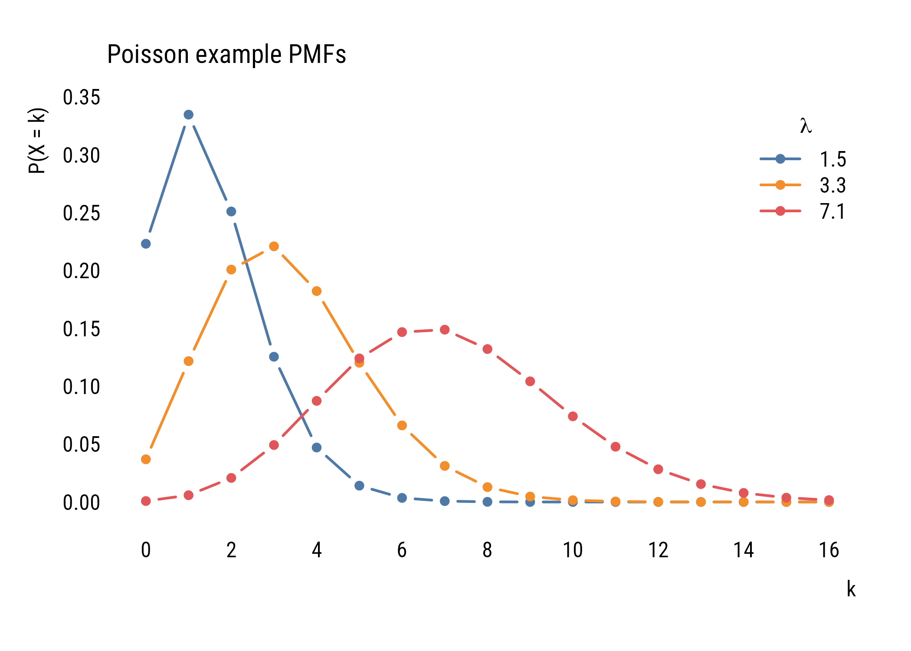
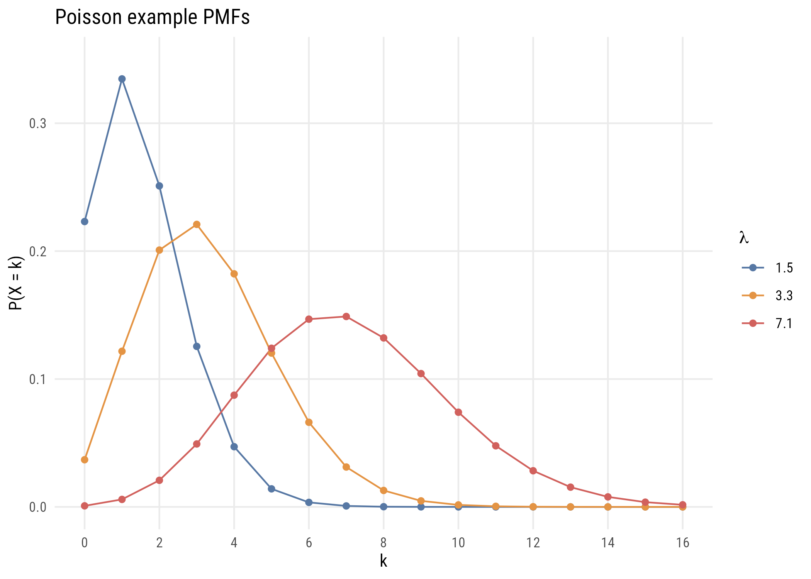
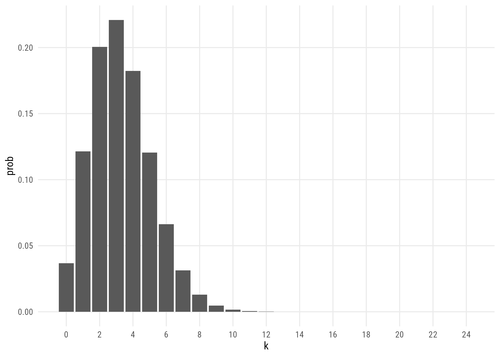
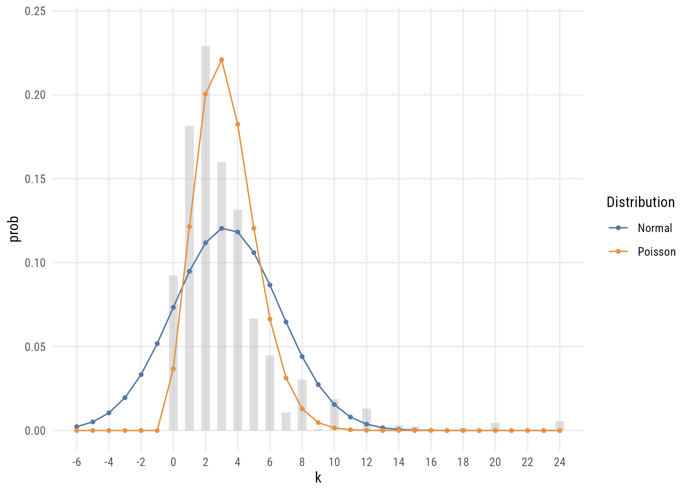

The goal of this chapter is to introduce Poisson regression and show how it can be used to analyze contingency table data.1
1 It makes sense to me to introduce Poisson right after categorical by categorical interactions because it allows us to think about the analysis of contingency tables.
Count variables are discrete (integers) and positive numeric variables. We count things like speeding tickets, friends, published papers, visitors to a coffee shop in an hour, or even income (dollars per year).
We will use the 2024 GSS data to illustrate.
d <-readRDS(here::here("data", "gss2024.rds")) |> haven::zap_labels() |>select(tvhours, degree, sex) |>drop_na() |>mutate(sex =factor(sex,labels =c("M", "F")), # sex as a factordegree_fac =factor(degree,labels =c("none", "HS", "AA", "BA", "grad")))nrow(d)
[1] 2144
17.1 The Poisson distribution
You are, of course, familiar with the normal distribution. That’s the one we’ve been using the whole semester.
The Poisson distribution is a different distribution that is often used for count outcomes—that is, for integer variables that can’t go below zero.
Unlike the normal distribution, which assigns a probability density to all the real numbers from \(-\infty\) to \(\infty\), the Poisson distribution is a discrete probability distribution that assigns a finite probability to all positive integers using a probability mass function.
Here’s the formula, though you probably won’t find it too useful yet.
Unlike the normal distribution, which has two parameters (\(\mu\) and \(\sigma\)), the Poisson distribution just has one parameter: \(\lambda\). This number governs the shape of a given Poisson distribution and is both its mean and the variance. It also assumes that events are independent, meaning that one event doesn’t make future events more likely.
plt(prob ~ x |factor(lambda),data = poisson_values,type ="b",xlab ="k",ylab ="P(X = k)",ylim =c(0, .35),lw =2,xaxb =seq(0, 16, 2),grid =FALSE,legend =legend("topright", title =expression(lambda)),main ="Poisson example PMFs")

Figure 17.1: Poisson example PMFs.
Show code
ggplot(poisson_values, aes(x = x, y = prob, color =factor(lambda))) +geom_line() +geom_point() +scale_x_continuous(breaks =seq(0, 16, 2)) +ylim(0, .35) +labs(x ="k", y ="P(X = k)", color =expression(lambda),title ="Poisson example PMFs")

Figure 17.2: Poisson example PMFs.
Even though the formula might look daunting at first, it’s pretty easy to find the probability of a certain count given a value of \(\lambda\). For example, if we ask “what’s the probability of having 5 job interviews if the mean number of interviews is 3.5 and the distribution follows a Poisson distribution?” we can do this:
(3.5^5*exp(-3.5)) /factorial(5)
[1] 0.1321686
…which tells us that there’s an 13.2% chance of getting exactly 5 interviews.
We could also get that this way:
dpois(5, 3.5)
[1] 0.1321686
Or ask what is the probability of more than 5:
ppois(5, 3.5, lower.tail =FALSE)
[1] 0.1423864
You get the idea.
TipTake a moment
What’s the probability of getting exactly 3 visitors to a coffee shop in an hour if \(\lambda = 3\) visitors per hour?
17.1.1 Modeling data
Before looking at predictors, we can think about how a variable could be modeled using the Poisson. First, let’s look at the unconditional distribution of tvhours in the GSS data.
Data prep
counts <- d |>count(tvhours) |>complete(tvhours =0:24, fill =list(n =0))
Figure 17.5: A Poisson distribution with lambda set to the sample mean.
Show code
ggplot(pois_dist, aes(x = k, y = prob)) +geom_col() +scale_x_continuous(breaks =seq(0, 24, 2)) +labs(x ="k", y ="prob")

Figure 17.6: A Poisson distribution with lambda set to the sample mean.
You can see that the modeled version is a simplified version of the empirical distribution. It doesn’t have as much probability mass out at the right tail, for example. It really doesn’t think that anyone is very likely to watch, say, 20 hours of TV per day.
That is the trade we are making whenever we reach for a theoretical distribution. Assumptions take us away from the data, but it’s often worth it: here we are describing 25 distinct counts with a single number.
17.1.2 Comparison to the normal distribution
We can compare the Poisson distribution of tvhours to a normal distribution with the mean and variance estimated from the data.
Data prep
mu <-mean(d$tvhours)sigma <-sd(d$tvhours)# cleaning up empirical distributionempirical_dist <- counts |>mutate(prob = n /nrow(d)) |>rename(k = tvhours) |>complete(k =-6:24, fill =list(prob =0))# getting theoretical distributionsdistributions <-tibble(k =-6:24,prob_Normal =dnorm(k, mu, sigma),prob_Poisson =dpois(k, mu))# adjusting prob dens so it sums to 1 (it's already close)normsum <-sum(distributions$prob_Normal)# reshaping long for plottingdistributions <- distributions |>mutate(prob_Normal = prob_Normal / normsum) |>pivot_longer(starts_with("prob"),names_to ="dist",values_to ="prob",names_prefix ="prob_")
Figure 17.7: Normal and Poisson descriptions of tvhours, against the observed distribution in gray.
Show code
ggplot() +geom_segment(data = empirical_dist,aes(x = k, xend = k, y =0, yend = prob),linewidth =3, color ="gray", alpha = .5) +geom_line(data = distributions, aes(x = k, y = prob, color = dist)) +geom_point(data = distributions, aes(x = k, y = prob, color = dist), size =1) +scale_x_continuous(breaks =seq(-6, 24, 2)) +ylim(0, .24) +labs(x ="k", y ="prob", color ="Distribution")

Figure 17.8: Normal and Poisson descriptions of tvhours, against the observed distribution in gray.
You can see that two distributions estimated on the same data allocate the probability mass in very different places, with the normal putting a lot of it below zero (which is technically impossible of course).
The Poisson isn’t perfect either. It doesn’t expect as many low values or high values as there actually are. This is because the Poisson assumes that the mean and variance of the distribution are the same. But in the empirical distribution, the mean is 3.3 and the variance is 10.9. It is actually common for empirical count data to be overdispersed relative what the Poisson expects.2
2 There are many things that lead to overdispersion, including different subpopulations (e.g., old and young), clustering (e.g., watching an hour of TV makes watching another hour more likely), and excess zeros (maybe some people have no chance of watching any TV). There are ways to address these issues (like negative binomial regression and zero-inflated Poisson) but I’m already on too big of a tangent.
We could compare the likelihoods of these two distributions.
norm_tv <-lm(tvhours ~1, data = d)pois_tv <-glm(tvhours ~1, data = d, family =poisson())logLik(norm_tv)
'log Lik.' -5603.863 (df=2)
logLik(pois_tv)
'log Lik.' -5589.428 (df=1)
Even using only one parameter, the Poisson does a better job of fitting the unconditional empirical distribution.
17.2 Models with predictors
Of course we are usually going to want to create models with predictors. We can write a Poisson model with one predictor like this:
All of the ways of writing nudge you toward different intuition.
17.2.1 Doing it manually
We’ve seen how to solve for parameters like this before. Here are the mean number of siblings for people who attend religious services weekly and less often:
# A tibble: 2 x 2
church numsibs
<chr> <dbl>
1 weekly 3.36
2 less 2.81
Just as in Chapter 16, we don’t have the model, we have the result of an unknown model. Only now the link is the log rather than the logit, so we solve \(2.81 = e^{\alpha}\) and \(3.36 = e^{\alpha + \beta}\):
means <- sibs |>group_by(church) |>summarize(m =mean(sibs)) |>pull(m, name = church)alpha <-log(means["less"])beta <-log(means["weekly"]) - alphac(alpha =unname(alpha), beta =unname(beta))
Call:
glm(formula = tvhours ~ sex, family = poisson(), data = d)
Coefficients:
Estimate Std. Error z value Pr(>|z|)
(Intercept) 1.16678 0.01815 64.28 <2e-16 ***
sexF 0.04995 0.02401 2.08 0.0375 *
---
Signif. codes: 0 '***' 0.001 '**' 0.01 '*' 0.05 '.' 0.1 ' ' 1
(Dispersion parameter for poisson family taken to be 1)
Null deviance: 5472.7 on 2143 degrees of freedom
Residual deviance: 5468.4 on 2142 degrees of freedom
AIC: 11179
Number of Fisher Scoring iterations: 5
From this we see that female respondents report watching 1.051 times more TV than male respondents. Exponentiating \(\beta\) gives the incidence-rate ratio, or the percent change in the expected count.
TipChallenge!
Fit glm(tvhours ~ college, family = poisson()) where college is 1 for a bachelor’s degree or more. According to that model, what is the probability that someone with (and without) a college degree watches 4 or more hours of TV per day?
You will need dpois() and the fitted \(\lambda\) for each group.
17.2.3 Overdispersion strikes
The summary() output also suggests that this difference is “statistically significant” at the .05 level. But we have to be careful here. Remember that the Poisson assumes that the mean and variance of the distribution are the same. But since the data are likely overdispersed (as we discussed above), the standard errors are probably actually bigger than estimated.
We can estimate correct standard errors using the code below. This is a “robust” SE because it’s robust (among other things) to a violation of the assumption that (conditional) mean and variance are the same.
lmtest::coeftest(m1,vcov = sandwich::vcovHC(m1, type ="HC3"))
z test of coefficients:
Estimate Std. Error z value Pr(>|z|)
(Intercept) 1.166782 0.032851 35.5173 <2e-16 ***
sexF 0.049953 0.043608 1.1455 0.252
---
Signif. codes: 0 '***' 0.001 '**' 0.01 '*' 0.05 '.' 0.1 ' ' 1
We can see that the robust standard error is quite a bit larger. This reminds me of part of a funny haiku by Keisuke Hirano:
T-stat looks too good.
Use robust standard errors—
Significance gone.
WarningA difference that disappears
On the model’s own standard errors, the sex difference in television watching is “statistically significant”; on standard errors that acknowledge overdispersion, it is not.
Poisson regression on overdispersed data manufactures significance. Since count data are nearly always overdispersed, report robust standard errors by default, or fit a model that estimates the dispersion, such as a negative binomial.
17.3 Why not just log the outcome?
There is an older habit you will meet constantly in published work: take a count, add a small constant, log it, and run an ordinary regression. The constant is there because log(0) is undefined, and counts contain zeros.
So we cannot log the variable as it stands, and must add something first. But what something? The usual choices are 1, or 0.1, or 0.01, and the decision feels like a rounding convention. It determines the answer.
Nothing about the data changed, and the estimated effect of a step in education moved by a lot. The reason is what the transformation does to the zeros: with a constant of 0.001, every respondent who watches no television is placed at -6.9, an enormous distance below someone who watches one hour.
Use a count model instead. The Poisson gets the log without adding anything to anything, because the log lives in the link function and applies to the expected count rather than to individual zeros.
17.4 Family and link are separate choices
A GLM has two components you choose independently: the family, which says what distribution the outcome follows, and the link, which says how the linear predictor connects to that distribution’s mean. We have used poisson() with its default log link, but nothing forces that pairing.
Show code
m_log <-glm(tvhours ~ degree, data = d, family =poisson())m_identity <-glm(tvhours ~ degree, data = d, family =poisson(link ="identity"))m_gaussian <-glm(tvhours ~ degree, data = d, family =gaussian(link ="identity"))data.frame(model =c("Poisson, log link", "Poisson, identity link", "Gaussian, identity"),coefficient =round(c(coef(m_log)[2], coef(m_identity)[2], coef(m_gaussian)[2]), 4),logLik =round(c(as.numeric(logLik(m_log)),as.numeric(logLik(m_identity)),as.numeric(logLik(m_gaussian))), 1))
model coefficient logLik
1 Poisson, log link -0.1560 -5460.4
2 Poisson, identity link -0.4857 -5461.3
3 Gaussian, identity -0.4913 -5565.3
The last model is OLS: a Gaussian family with an identity link is exactly lm(). Everything in Parts II and III was a generalized linear model; we simply had no reason to say so. The link changes what a coefficient means (multiplicative under the log, additive under the identity), and here the family matters more than the link, since both Poisson models fit far better than the Gaussian one.
17.5 Models for tables
OK now with all this in hand we can finally get back to thinking about how models can be tables. Remember this?
Show code
xtab <- d |>tabyl(sex, degree_fac)xtab
sex none HS AA BA grad
M 66 471 66 212 130
F 117 516 120 260 186
What if instead we reshaped it into dataframe like this so that it has 10 rows?
Show code
dcounts <- d |>summarize(freq =n(),.by =c(degree_fac, sex)) |>arrange(sex, degree_fac)dcounts
# A tibble: 10 x 3
degree_fac sex freq
<fct> <fct> <int>
1 none M 66
2 HS M 471
3 AA M 66
4 BA M 212
5 grad M 130
6 none F 117
7 HS F 516
8 AA F 120
9 BA F 260
10 grad F 186
We can now model the count of cases in each cell (freq) as some function of the two categorical variables, degree_fac and sex.
Let’s build up slowly. Think about what the model below would mean.
It assumes that freq would be the same in all 10 cells. We can confirm this as follows:3
3 We have to specify option type = "response" in the predict() function because without it we’ll get the prediction in log counts because that’s how the model thinks. This option says “we want it in the original units.”
dcounts <- dcounts |>mutate(pred_null =predict(tm_null, type ="response"))dcounts
# A tibble: 10 x 4
degree_fac sex freq pred_null
<fct> <fct> <int> <dbl>
1 none M 66 214.
2 HS M 471 214.
3 AA M 66 214.
4 BA M 212 214.
5 grad M 130 214.
6 none F 117 214.
7 HS F 516 214.
8 AA F 120 214.
9 BA F 260 214.
10 grad F 186 214.
This model would allow the male and female cells to have different counts:
dcounts <- dcounts |>mutate(pred_sex =predict(tm_sex, type ="response"))dcounts
# A tibble: 10 x 5
degree_fac sex freq pred_null pred_sex
<fct> <fct> <int> <dbl> <dbl>
1 none M 66 214. 189.
2 HS M 471 214. 189.
3 AA M 66 214. 189.
4 BA M 212 214. 189.
5 grad M 130 214. 189.
6 none F 117 214. 240.
7 HS F 516 214. 240.
8 AA F 120 214. 240.
9 BA F 260 214. 240.
10 grad F 186 214. 240.
This is a little better but not matching freq very well! Let’s add degree also:
tm_both <-glm(freq ~ sex + degree_fac,data = dcounts,family =poisson())
dcounts <- dcounts |>mutate(pred_both =predict(tm_both, type ="response"))dcounts
# A tibble: 10 x 6
degree_fac sex freq pred_null pred_sex pred_both
<fct> <fct> <int> <dbl> <dbl> <dbl>
1 none M 66 214. 189. 80.7
2 HS M 471 214. 189. 435.
3 AA M 66 214. 189. 82.0
4 BA M 212 214. 189. 208.
5 grad M 130 214. 189. 139.
6 none F 117 214. 240. 102.
7 HS F 516 214. 240. 552.
8 AA F 120 214. 240. 104.
9 BA F 260 214. 240. 264.
10 grad F 186 214. 240. 177.
This is closer but not quite there. Why? Because it assumes that sex can affect the number of people in a cell and degree can affect the number of people in a cell but they don’t influence each other’s effects! Let’s take a closer look:
summary(tm_both)
Call:
glm(formula = freq ~ sex + degree_fac, family = poisson(), data = dcounts)
Coefficients:
Estimate Std. Error z value Pr(>|z|)
(Intercept) 4.39024 0.07782 56.414 < 2e-16 ***
sexF 0.23806 0.04350 5.473 4.43e-08 ***
degree_facHS 1.68518 0.08048 20.938 < 2e-16 ***
degree_facAA 0.01626 0.10412 0.156 0.876
degree_facBA 0.94749 0.08708 10.881 < 2e-16 ***
degree_facgrad 0.54626 0.09289 5.881 4.09e-09 ***
---
Signif. codes: 0 '***' 0.001 '**' 0.01 '*' 0.05 '.' 0.1 ' ' 1
(Dispersion parameter for poisson family taken to be 1)
Null deviance: 968.245 on 9 degrees of freedom
Residual deviance: 17.065 on 4 degrees of freedom
AIC: 98.797
Number of Fisher Scoring iterations: 4
This model says that cells from female respondents have 0.238 more log respondents in them. If we exponentiate that, we see that female cells have 1.27 times more respondents in them compared to the corresponding male cell. You can confirm that by comparing the predictions above.
This is the same as assuming independence—that education and sex have nothing to do with each other. These predictions are the same as the expected values in the \(\chi^2\)-test at the end of Chapter 15.
Note that this model only uses 6 degrees of freedom—intercept, female dummy, four education dummies—to represent a table with 10 cells. So it’s an attempt to approximate 10 numbers with 6 numbers.
We can get the full table—what we call the saturated model—by allowing the factors to interact:
tm_sat <-glm(freq ~ sex * degree_fac,data = dcounts,family =poisson())
dcounts <- dcounts |>mutate(pred_sat =predict(tm_sat, type ="response"))dcounts
# A tibble: 10 x 7
degree_fac sex freq pred_null pred_sex pred_both pred_sat
<fct> <fct> <int> <dbl> <dbl> <dbl> <dbl>
1 none M 66 214. 189. 80.7 66.0
2 HS M 471 214. 189. 435. 471.
3 AA M 66 214. 189. 82.0 66.0
4 BA M 212 214. 189. 208. 212.
5 grad M 130 214. 189. 139. 130.
6 none F 117 214. 240. 102. 117.
7 HS F 516 214. 240. 552. 516.
8 AA F 120 214. 240. 104. 120.
9 BA F 260 214. 240. 264. 260.
10 grad F 186 214. 240. 177. 186.
You can see that the model “predictions” are exactly the same as the data. This is because we used 10 parameters to recover 10 cell counts.
If we compare the saturated model to the independence model, we are asking the same question as the old-school \(\chi^2\) test.4
4 As the sample goes to infinity, the likelihood ratio\(\chi^2\) test and the Pearson’s \(\chi^2\) test are the same. But in finite samples, we have to use Rao’s score test to get the exact same values from anova().
anova(tm_both, tm_sat, test ="Rao")
Analysis of Deviance Table
Model 1: freq ~ sex + degree_fac
Model 2: freq ~ sex * degree_fac
Resid. Df Resid. Dev Df Deviance Rao Pr(>Chi)
1 4 17.065
2 0 0.000 4 17.065 16.893 0.002027 **
---
Signif. codes: 0 '***' 0.001 '**' 0.01 '*' 0.05 '.' 0.1 ' ' 1
The gain is everything a model gives you and a test does not: coefficients, intervals, the ability to add predictors, and comparison by AIC or BIC.
17.6 An example from the literature
These loglinear models for tables were actually super important for sociology in the 1970s and 1980s. You don’t see them much anymore, but here is a 2006 example.
Loglinear models come into their own with three or more variables, where “are these independent?” stops being a single question.
With three variables there are several ways they might be related: all mutually independent, or one pair associated but not others, or all three pairs associated. Each is a model, and we can compare them against the saturated model, the one that reproduces the table exactly.
model df G2 p AIC BIC
1 all independent 20 103.44 0.000 255.7 264.8
2 income-network, network-culture 12 14.60 0.264 182.8 202.3
3 income-culture, culture-network 12 37.25 0.000 205.5 224.9
4 income-culture, income-network 12 51.71 0.000 220.0 239.4
5 all three pairs 8 6.46 0.596 182.7 207.3
Read the p column as a goodness-of-fit test in reverse: a large p-value means the model is not detectably worse than the saturated one, so it describes the table adequately.
Complete independence fails badly. The model allowing income–network and network–culture associations fits fine, and so does the model with all three pairs. AIC splits them almost evenly; BIC prefers the simpler of the two, as it usually does.
The substantive reading is that network size is doing the connecting work. Once it is associated with both income and culture, no direct income–culture association is needed to describe the table.
17.7 Coda
That is the end of the models in this book.
We began, in Chapter 4, with a prediction and an error term. That picture carried us through regression, multiple predictors, and interactions. Then the outcome became binary and the error term dissolved; then the outcome became a count and we changed distributions again. What survived every one of those transitions was the model comparison: a compact model, an augmented model, and a principled way of asking whether the extra complexity earned its place.
That question (is this more complicated description worth it?) is the one piece of machinery that has appeared in every chapter since. Everything else has been a matter of choosing the right distribution for the outcome in front of you.
What we have deliberately not asked is whether any of these relationships is causal. Every coefficient in this book describes how outcomes differ across cases that differ in some measured way. None of them tells you what would happen if you intervened. That question needs different tools, different designs, and a different kind of care, and it is where the next course begins.
17.8 Recap
count variables are discrete, non-negative integers, and are poorly described by the normal distribution, which puts probability below zero
the Poisson distribution has a single parameter \(\lambda\), which is both its mean and its variance
it assumes events are independent
real count data are usually overdispersed, which makes model-based standard errors too small
use robust standard errors, or a model that estimates dispersion
Poisson regression models \(\log(\lambda)\) linearly, and exponentiated coefficients are incidence-rate ratios
don’t log a count with zeros in it; the answer depends on the constant you invented
a contingency table can be modeled by treating cell counts as the outcome
the additive model reproduces the chi-square test’s expected counts, and comparing it against the saturated model with Rao’s score test reproduces the test exactly
loglinear models extend this to three or more variables